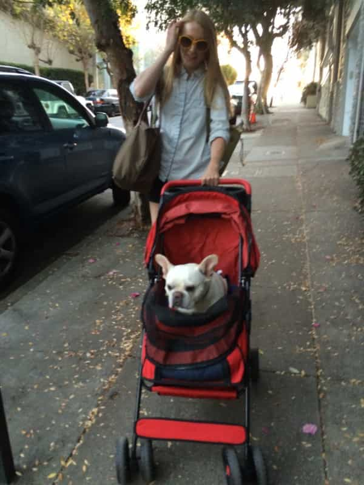

Author of the book "I love to travel" and 10 other things men never want to hear: The politically incorrect guide to dating. Click here for the eBook! Click here for the paperback!


It’s mid-morning on a Sunday in April, which just so happens to be your favorite time of the year. The sun deftly emerges behind the trees, as the air sprightly nips at your cheeks. While taking your dog for a stroll through the park, you meet “Madison”, who is jogging alongside her golden retriever. After exchanging brief yet knowing glances, you slowly approach her.
Sanguine in stride, the two of you indulge in small talk about each other’s pet. In between coy flirtations, she tells you his name is Maxwell. Gushing as wildly as a new mother, she declares, “I just adore him. I feel like he is just the most perfect dog. He’s my whole world. Is that weird to say? Sometimes I call him my fur baby. I don’t know – I love being a dog mom.” And that was the moment where you hit the eject button on the conversation. Or at least you should have, anyway.
See, “Madison” is just one of many basic MAW’s (Millennial American Women), possessed by this strange notion that owning a canine is just like parenting a human child. The next time you hear a woman declare that she is a “dog mom”, grab her by the shoulders (carefully though, or you might get charged with sexual assault), and repeat the following: “No, you’re not. You’re a dog owner, not a ‘dog mom’. You didn’t carry the dog to term. You didn’t deliver the dog. You’re not genetically related to the dog. And while it is just precious to insinuate that you are its mother, you are just its owner. It is property, not a person.” Maybe give her the old Sean Connery treatment for good measure (please don’t).
Virtually every woman holds a desire, or at the very least a capacity, for maternal nurturing. Certainly, we can conjure examples to the contrary, but those are by and large outliers and as such will not be discussed here. Most women hold either a conscious or unconscious desire to be a mother – it is an undeniable component of female psychology. Foundational, even. Considering this, it is tragic what our culture has done to the feminine instinct to nurture.
Since at least the 1960’s, women have been conditioned to view maternity as a barbaric institution of male enslavement. According to the feminists and gender activists, motherhood is for peasants and dullards. Real women go to graduate school. Real women grind out a 50 or 70-hour work week! Female empowerment is just over the other side of a 401k plan. And even with all this anti-feminine programming, women still look for ways to express their maternal instincts.
Yes, those are dogs in that baby carriage instead of children
Enter: The Dog Mom. Women who give the gift of unconditional love. Unconditional love is critical in the early years of a child’s life because they need that warmth to develop empathy and social skills. Without it, they quite literally perish. Medical and psychological research confirmed this fact in the early years of the twentieth century, referring to the absence of maternal warmth as ‘the failure to thrive.’ But since our culture works to make marriage and childrearing as distasteful as possible, MAW’s are herded away from this path.
I’m sure there is more to it than that; the failures of the Boomer generation have also contributed quite heavily to the collective bad taste in the mouths of Millennials. Rampant philandering, divorce, drug problems, and a litany of other hypocrisies and immoralities produced countless broken homes and ruined childhoods. Many American Boomers lived as if their careers were more important than their own children. Babies raising babies, as it were. So, who picked up the slack? Television. Daycare centers. Or worse, the other kids in the neighborhood.
The Boomers failed to uphold the cultural and moral values that America was founded on, and in doing so, undermined the beauty of our Western way of life. Combine intergenerational trauma with the social engineering I have discussed, and you create the necessary conditions for young people to abandon that most noble act of procreation. But these circumstances do not change female biology; women still want to love and nurture adorable little balls of flesh, and so that maternal instinct gets displaced.

The anxiety and unresolved emotional distress around childlessness drive women toward a softer, more infantile target, and so the new object of unconditional love becomes Bailey the beagle, a kind of canine surrogate. And a miserable one, at that. If you observe a pattern of displaced feminine instincts (of which this is merely one expression), you should probably start looking elsewhere – especially if you are interested in things like, say, reality, or having children.
It’s not your job to screw a damaged person’s head back on straight. In fact, in attempting to do so, you will only loosen the screws of your own. The mental gymnastics it takes to justify the phenomenon of the Dog Mom all but confirms the stereotype of the solipsistic woman.
I think the most pernicious aspect of this whole ordeal lies in the fact that only the young fall prey to this trap. In other words, when we are young, lacking in experience and vital brain development, we are told certain untruths about the future. An untruth like, “Children are less important than your career. They are less important than your education. Don’t worry, you can put off that messy, time-sensitive biological business. Go out there and make your government some money!”.

Our society can benefit from that lie for the next ten, fifteen, maybe twenty years before those being lied to realize that life has passed them by, and they will no longer have the kinds of options that they might have had in their youth. Marriage and children might not even be on the menu by then. It’s tragic.
The dog mom phenomenon cheapens true motherhood by insisting that wholly different things are identical – a false equivalency of the highest order. It is a truly misguided attempt at self-delusion by MAW’s, and an abdication of their truest and most natural role. Desperate for meaning, but not desperate enough to do the right thing, MAW’s think that adopting the ‘mom’ moniker will set their world right.
She may have her reasons, such “The world is overpopulated,” “I’m just not the mom-type,” “I just can’t imagine bringing another life into such a horrible world,” and so on, but these are nothing more than a loose stitching of psychological defenses, flimsily arranged to avoid examining the damage beneath them. In short, she is not worthy of your time or attention.
Read Next: Never Date A Girl Who Has Rescued A Dog